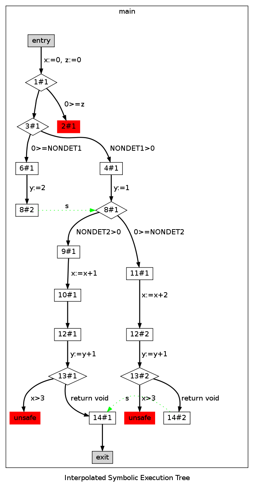

TRACER: Symbolic Execution for Verification
Description: TRACER is a tool for symbolic execution of C programs developed at National University of Singapore . The input C program is annotated with target properties . The purpose of symbolic execution, which is presented as a tree of symbolic paths (i.e., traces), is to demonstrate that the target properties hold. In addition to target properties, the C program may also be annotated with localized abstractions which abstract symbolic states during symbolic execution. The main purpose here is to reduce the total size of the symbolic execution tree. If and when the symbolic execution process determines that the trace tree is closed , i.e., that all concrete traces are represented by the trace tree, and the target properties have not been violated thus far, then we have a proof of the target properties.
main() {
int x,y,z;
int NONDET1,NONDET2;
0: x=0; z=0;
1: if (z>0){
2: // ...
}
3: else if (NONDET1>0)
4: y=1;
5: else
6: y=2;
8: if(NONDET2>0)
9: x=x+1;
10: else
11: x=x+2;
12: y=y+1;
13: _TRACER_abort(x>3);
14:
}
|
 |
| TRACER performs symbolic execution of the program while attempting to find an execution path that reaches the node labelled with unsafe. If such path cannot be found, then it concludes that the program is safe. Consider the program above on the left-hand side. Safety conditions are annotated in TRACER using _TRACER_abort(Cond), where Cond is the negated safety condition. One feature of TRACER is the output of the interpolated symbolic execution tree (above, right-hand side) generated during the proof process. Nodes are labeled as P#C where P is the corresponding program point, and C enumerates different visits of the same program point. Edges between two locations are labeled by the (possibly empty) instruction that executes when control moves from the source to the destination. Conditional statements are represented with diamond nodes, basic block of statements with box nodes, and entry and terminal nodes are filled with grey color. One distinction of TRACER is the ability of detecting eagerly infeasible paths. Those paths always end up into red nodes. Subsumption allows TRACER stopping the traversal of a path (avoiding full path enumeration) whenever the state associated with the current node implies the interpolated state stored for the node during a previous traversal. Green dotted edges reflect subsumption (sibling-to-sibling or parent-child) between two nodes. |
Documentation
-
J. Jaffar,
A. E. Santosa
R. Voicu.
An Interpolation Method for CLP traversal
(CP'09)
- J. Jaffar, J. A. Navas, A. E. Santosa. TRACER: Symbolic Execution For Verification (tool paper1 with appendix).
Download and Usage
- You can download TRACER from
here along with
some benchmarks.
The current version works only for Linux. The other requirements are JDK >= 1.5 and bash shell. - tar -zxvf tracer.0.1.tar.gzip
- export TRACERPATH=_here_path_to_tracer.0.1_dir
- cd tracer.0.1
- usage: minmax -help
- To run regression tests : cd tests ; regrtest -all
- To run benchmarks from 1: cd benchmarks ; regrtest -all
People
For technical problems contact to Jorge Navas and Andrew Santosa